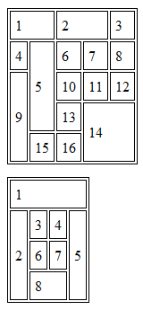
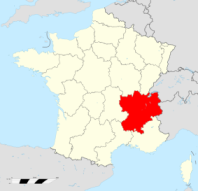
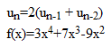
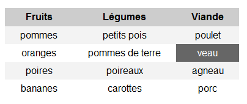
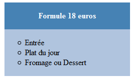

Ce TP est prévu pour 2 séances.
Toutes les pages HTML que vous créerez lors des TP devront être validées par le W3C : validateur.
Toutes les feuilles de style CSS devront être elles aussi validées : validateur CSS.
Pensez à vous organiser : créez des répertoires (par exemple L2/TIB/TP/TP1_2).
Télécharger le fichier html suivant : corriger_html.html et l'enregistrer dans votre répertoire. L'ouvrir avec un navigateur et un éditeur de texte (sous Linux, vous pouvez utiliser emacs ou gedit).
À l'aide de vos connaissances, corriger les erreurs qui ont été commises dans le code HTML. Vous pouvez vous aider en cherchant sur internet.
Vous devrez notamment préciser l'encodage du fichier pour résoudre les problèmes d'accents. Vous aurez aussi besoin d'enregistrer les images manchot_empereur.jpg et manchot_magellan.jpg.
Vous utiliserez également le validateur du W3C : il vous faut uploader votre fichier puis tester la validation. Corriger les erreurs qui seront listées.
À la fin de l'exercice, le validateur ne doit plus renvoyer aucune erreur et toutes les balises doivent être correctement fermées.
Créer une page tableaux.html, qui contiendra les deux tableaux suivants l'un sous l'autre :

Pour avoir des bords autour du tableau et de ses cellules, ainsi qu'un peu d'espacement, ajouter le code suivant dans la balise <head> (ou dans un fichier CSS indépendant que vous créerez et lierez dans la page HTML) :
<style type="text/css">
table, td {
border: 1px solid black;
}
td {
padding: 5px;
}
</style>
À l'aide de cette page : Liste des monarques de France, créer une page HTML monarques.html avec pour titre de niveau 1 "Quelques monarques de France".
Vous devrez choisir 3 monarques parmi ceux proposés.
Pour chacun, vous ferez :
- un titre de niveau 2 avec le nom du monarque
- en dessous, un tableau ayant au moins une ligne et deux cellules, l'une contenant une image du monarque, et l'autre quelques informations (par exemple, les dates de règne, etc.). Les images devront être stockées dans un répertoire à part.
Vous devrez, en haut de la page (sous le titre de niveau 1), ajouter un sommaire, avec 3 liens pointant sur les noms des 3 monarques. Cliquer sur ces liens permet d'aller directement au monarque concerné.
En dessous de chaque tableau de monarque, vous ajouterez un lien de retour vers le sommaire.
Testez chaque lien et assurez-vous qu'ils fonctionnent. Au besoin, ajouter du texte pour avoir un contenu de taille suffisante pour bien se rendre compte des déplacements dans la page.
Créer une page HTML nommée rhone_alpes.html, avec pour titre de niveau 1 "La région Rhône-Alpes".
À la suite, insérer un <div> qui contiendra un paragraphe avec :
- cette image, que vous enregistrerez dans votre répertoire :

- ce texte (faire un copier-coller), que vous encadrerez d'une balise adéquate : "Rhône-Alpes est une région française qui regroupe huit départements : l'Ain, l'Ardèche, la Drôme, l'Isère, la Loire, le Rhône, la Savoie et la Haute-Savoie. Son chef-lieu est Lyon, qui est aussi sa plus grande ville. C'est la deuxième région de France métropolitaine en superficie (après Midi-Pyrénées), en économie et en population (après Île-de-France). Elle est aussi classée 6e région européenne. Elle est limitrophe des régions françaises Provence-Alpes-Côte d'Azur, Languedoc-Roussillon, Auvergne, Bourgogne et Franche-Comté, des régions italiennes de Val d'Aoste et Piémont, ainsi que des cantons suisses de Vaud, du Valais et de Genève. Schématiquement, la Région Rhône-Alpes représente le 1/10° de la France en termes économiques, démographiques et de superficie."
Ne pas oublier de fermer le <div>.
Vous pouvez désormais ouvrir rhone_alpes.html avec un navigateur. Observez la mise en page.
Nous allons modifier peu à peu le style de cette page. À chaque nouvel ajout, vous pouvez sauvegarder votre fichier HTML puis actualiser le navigateur pour visualiser les changements.
- placer une balise de style dans <head>
- ajouter ces lignes :
img{
float:left;
}
Ceci signifie que l'image va désormais "flotter" sur la gauche de la page. Le texte viendra naturellement se placer à sa droite. Actualiser le navigateur.
- ajouter :
div{
width:450px;
text-align:justify;
}
Nous venons de préciser que le <div> doit avoir une largeur de 450px, et que son texte doit être justifié. Actualiser le navigateur : une fois l'image dépassée, le texte s'aligne sur la gauche de la page.
Télécharger le fichier html suivant : corriger_css.css et l'enregistrer dans votre répertoire. L'ouvrir avec un éditeur de texte.
À l'aide de vos connaissances et de ce site (par exemple), corriger les erreurs qui ont été commises dans le code CSS.
Vous utiliserez également le validateur CSS du W3C : il vous faut uploader votre fichier puis tester la validation. Corriger les erreurs qui seront listées.
À la fin de l'exercice, le validateur ne doit plus renvoyer aucune erreur.
Vous allez maintenant créer vous-même une feuille de style externe. Dans cet exercice, servez-vous de la syntaxe CSS indiquée dans votre cours, mais aussi de ce site (par exemple).
Commencer par télécharger ce fichier : informatique.html et l'enregistrer. L'ouvrir avec un navigateur et un éditeur de texte. Vous remarquerez que le navigateur affiche les éléments les uns à la suite des autres, sans style particulier. Dans le code source, vous verrez qu'une feuille de style est appelée dans la partie <head> du fichier. Comme elle n'existe pas encore, le contenu du fichier est affiché sans style dans le navigateur. C'est cette feuille de style que nous allons créer.
Ouvrir un nouveau fichier avec un éditeur de texte et l'appeler style.css.
Ajouter les informations suivantes (enregistrer régulièrement et actualiser le navigateur pour voir les changements) :
- le corps de la page doit avoir une police de 12px, georgia en sans-serif. La hauteur d'une ligne vaut 2. La couleur du texte est #555753, celle du fond #CDCDCD ;
- tous les paragraphes auront un texte justifié ;
- les titres de niveau 3 auront une police en italique, de 18px, georgia en sans-serif. L'espacement entre les lettres sera de 1px. Le texte sera de couleur #8B0000 ;
- les liens seront en gras, jamais soulignés, et de couleur #00008B ;
- définir un style correspondant à un id "contenant". Il aura une largeur de 840px, un fond de couleur #FFFFFF, un bord de 1px, sous forme d'une ligne continue noire, et sera centré dans la page (margin:auto auto auto auto;) ;
- définir un style correspondant à l'élément <header>. Il aura pour fond cette image, qui sera centrée et ne devra pas être répétée. Le texte sera aligné à droite. La hauteur est de 110px et la largeur vaut 750px. Enfin, ajouter un padding de 30px en haut, en bas et à gauche, et un padding de 60px à droite (pour comprendre le fonctionnement des padding et autres marges, vous pouvez vous référer à cette page) ;
- définir un style correspondant à un id "texte". Il aura une largeur de 650px et une hauteur de 650px. On ajoute un padding valant de tous côtés 20px ;
- définir un style correspondant à l'élément <nav>. La police sera verdana en sans-serif, de 10px, et le fond de couleur #B7B7B7. On fixe la largeur à 130px, la hauteur à 690px et on ajoute un padding de 10px de tous côtés. On précise que cet élément flottera à droite dans la page (float: right;) ;
- préciser que les listes à l'intérieur de l'élément <nav> auront un style correspondant à un cercle vide ;
- définir un style correspondant à l'élément <footer>, ayant un texte centré, une largeur de 840px et une hauteur de 50px. Le fond sera de couleur #B7B7B7 et on ajoute une marge en haut de 20px ;
- préciser que les liens à l'intérieur de l'élément <footer> ont une marge droite de 30px.
Enregistrer votre fichier et actualiser la page du navigateur. Essayer de comprendre, à l'aide du code HTML et CSS, quels changements ont eu lieu et pourquoi. Comprendre notamment les largeurs, par rapport aux margin, padding, etc.
Compléter et/ou modifier la feuille de style à votre goût (par exemple, mettre une couleur différente pour les liens du menu et ceux du bas, pour les balises <h3> du texte et celles du menu, ou encore essayer de déplacer les <div> dans la page...)
Reproduire les éléments suivants :

La cellule en gris foncé montre ce qui doit changer au passage de la souris (hors ligne de titre)

